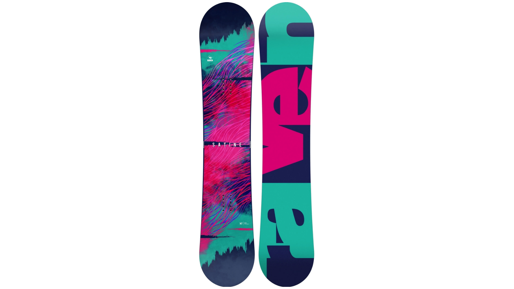
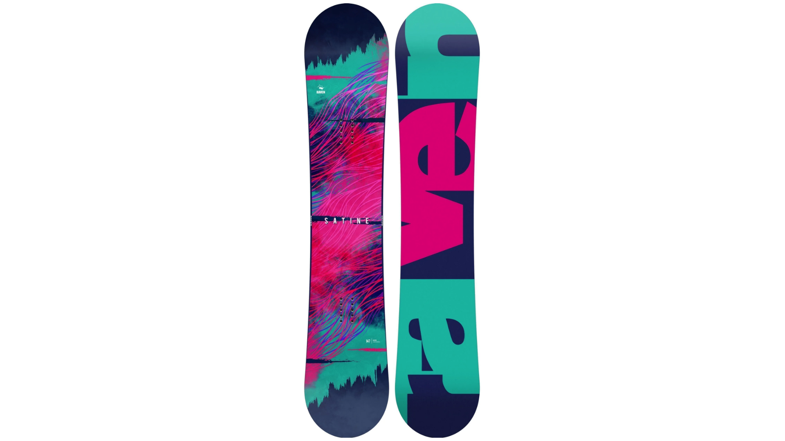

Masz dość pożyczania deski snowboardowej? Czas na swój, ale nie wiesz od czego zacząć? Nie martw się, zespół SIMTEK.LT jest gotów Ci pomóc, aby ta długoterminowa inwestycja się opłaciła i dała Ci maksimum przyjemności.
Nie ma co ukrywać, różnorodność wyborów na rynku w tej chwili może przyprawić każdego o zawrót głowy, dlatego postaramy się wskazać podstawowe zasady i zaszczepić najbardziej podstawową wiedzę, aby wybrać najodpowiedniejszą deskę. Potrzeby każdego są indywidualne, począwszy od warunków w jakich deska będzie używana, po wzrost, wagę i rozmiar buta. Chociaż powszechnie uważa się, że długość deski snowboardowej dobiera się w zależności od wzrostu, nie jest to jednak do końca prawdą. Często równie ważnym czynnikiem jest waga – w końcu nie można oczekiwać od snowboardzistów tego samego wzrostu, ale z różnicą wagi 30 kg, używania desek tej samej długości… 🙂 To od czego zacząć?
Wybierając deskę snowboardową, najważniejsze rzeczy, na które należy zwrócić uwagę, to rodzaj, długość, szerokość i kształt deski. Zacznijmy od początku!
RODZAJE SNOWBOARDU
Freestyle - zbalansowana deska do skoków wzwyż i ślizgów przez boxy lub poręcze. Bardziej odpowiedni dla nieco zaawansowanych lub szybko doskonalących się jeźdźców, którzy spędzają długie godziny w parkach lub na ulicach, ale nie odmawiają innym nawierzchniom. Są to miękkie i elastyczne deski, które zapewniają więcej zabawy lądowaniom i skokom. Jeśli Twój wskaźnik masy ciała mieści się w normie, górna krawędź tego typu deski powinna znajdować się w okolicy dolnej krawędzi podbródka – krawędzi dolnej wargi.
All-mountain – już sama nazwa zdradza, że ​​ten typ deski jest chyba najbardziej wszechstronną ze wszystkich oferowanych. Ta deska będzie pasować do wszystkich riderów i ich stylu. Z tą deską odnajdziesz się na każdej nawierzchni - od parków po szlaki czy puch poza nimi. Większość z tych desek snowboardowych ma kształt camber i mniej zakrzywionych krawędzi, co czyni je bardziej wyrozumiałymi dla początkujących. Ten typ deski powinien być nieco dłuższy niż deska freestyle (~3-4 cm).
Jib/Rails - Jeśli szukasz bardzo zwrotnej deski, która jest idealna do ślizgania się po poręczach lub pokonywania niższych skoków - to jest deska dla Ciebie. Deski snowboardowe typu Jib/rail nie są tak miękkie jak deski freestyle, więc będziesz mieć większą stabilność pod stopami. Deski te nie powinny być długie, wręcz przeciwnie – aby nie stracić swojej wyjątkowej zwrotności, warto wybrać jak najkrótsze (~4-5 cm krótsze niż typu freestyle).
Freeride - dla snowboardzistów, którzy mają bzika na punkcie szybkości. Nadaje się zarówno do golenia na torach, jak i do rzeźbienia pudru w kostkach. Te deski są specyficzne - mają dłuższą krawędź i kształt dostosowany do głębokiego śniegu i torów. Większa długość zapewnia większą stabilność podczas zjeżdżania z dużą prędkością i lepiej pochłania wibracje. Tak więc, jak już zrozumiałeś, długość tych desek jest najdłuższa w porównaniu do innych typów.